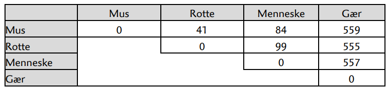

Hvem ligner du mest?
Evnen til at skelne mellem forskellige kategorier er helt central for os som mennesker. Vi kan langt oftest kende forskel på et æble og en pære, på en cykel og en knallert eller på om en person er en kvinde eller en mand. Som regel kan vi endda med stor sikkerhed kende forskel blot med et hurtigt blik og uden at se hele objektet, men en sjælden gang tager vi dog fejl, hvilke kan føre til pinlige situationer.
Vi har også apps på vores telefoner eller computere, som ud fra et billede kan genkende personer eller fra nogle få strofer kan genkende en sang. Der er scannere i lufthavne og andre steder, som kan genkende farlige ting, og biler har autopiloter, der selv holder afstanden til forankørende. Vi har også apps, som går den anden vej, og forvrænger et billede af en person, så personen bliver svær at genkende, men ofte alligevel kan genkendes, selvom ansigtet er fordrejet.
Så alle steder og hele tiden foregår der bevist eller ubevist en skelnen mellem forskellige kategorier, men hvordan foregår denne skelnen i grunden? Hvis vi skulle svare fyldestgørende på dette spørgsmål, om overhovedet muligt, ville det nok betyde et langt studie på universitetet og sikkert mere end dette, men lad os starte med et meget simpelt eksempel, og tage den derfra.
Vi får brug bruge din viden om afstande mellem punkter, men kommer også til senere at se på andre former for afstand. Det er en fordel af lave opgaverne i grupper, da der kan blive en del af diskutere.
Case 1 – Afstand mellem to punkter
Opgave 1
På figuren nedenforfor er der 10 røde punkter, 10 blå punkter og 10 grønne punkter – samt et enkelt gråt punkt P. Vurdér ud fra placeringen af det grå punkt P, om du synes, at dette punkt bør være rødt, blåt eller grønt for at passe bedst ind.

Opgave 2
På den næste figur er der andre 31 punkter, samt en cirkel med radius 10 omkring det grå punkt P(15,15).
Tæl hvor mange røde, blå og grønne punkter, der ligger inde i cirklen. Kan det bruges til at beslutte, hvilken farve det grå punkt bør have?
Hvilket resultat giver det, hvis cirklens radius kun var halvt så stor? Vurdér på øjemål.
Opgave 3
Det går nok ikke i længden blot at ville vurdere på øjemål, så du må til at regne lidt. Her er koordinater og farver på de 10 punkter, der ligger tættest på det grå punkt i opgave 2.
Udregn afstanden fra det grå punkt P(15 ; 15) til hver af disse 10 punkter.
| Farve | 1 | 2 | 3 | 4 |
|---|---|---|---|---|
| Blå | (13,8 ; 19,9) | (8,2 ; 14,9) | (16,4 ; 14,1) | (15,5 ; 13,1) |
| Rød | (10,6 ; 16,0) | (16,3 ; 15,2) | (15,6 ; 11,3) | |
| Grøn | (11,1 ; 18,6) | (16,4 ; 17,5) | (21,7 ; 13,4) |
Afgør så, hvor mange af hver farve, der ligger indenfor en cirkel med radius 5 omkring det grå punkt. Hvilken farve tyder det på, at det grå punkt bør have?
Opgave 4
Overvej, hvad der sker, hvis cirklens radius vælges som en meget lille værdi eller som en meget stor værdi i forhold til at bruge metoden til at bestemme, hvilken farve det grå punkt bør have.
Opgave 5
Tabellen viser koordinater og farver på 27 andre punkter. Lav et punktplot i dit CAS-værktøj med disse punkter.
| Farve | 1 | 2 | 3 | 4 | 5 | 6 | 7 | 8 | 9 |
|---|---|---|---|---|---|---|---|---|---|
| Blå | (15,25) | (10,20) | (15,30) | (8,16) | (6,10) | (17,15) | (23,17) | (15,14) | (14,4) |
| Rød | (30, 5) | (18,18) | (21,9) | (6,24) | (25,25) | (18,16) | (12,11) | (8,10) | (16,13) |
| Grøn | (8,28) | (12,20) | (16,20) | (21,14) | (13,10) | (12,13) | (20,18) | (14,16) | (18,10) |
Indtegn en cirkel omkring det grå punkt P(15,15) og brug cirklen til at vurdere, hvilken farve punktet bør have. Ændr på radius af cirklen og se, om det gør en forskel.
Diskutér, hvilken radius, der er bedst.
Afslutning på case 1
Der bliver nok klart, at der er brug for en metode til at beslutte, hvor stor radius skal være for at få det bedste resultat. Kort og lidt simpelt forklaret, involverer det noget, som man kalder træningsdata, hvor man har en række grå punkter, som man faktisk godt kender den rigtige farve på. Lad os sige, at træningsdata er 50 grå punkter. Så afprøver man forskellige værdier af radius, f.eks. 5, 10 og 20. Hvis metoden med radius 5 “gætter” rigtige for 35 af de 50 punkter, med radius 10 “gætter” 31 korrekt og med radius 20 “gætter” 39 korrekt, ja så er radius 20 jo bedst. Helt så simpelt er det ikke, men hvis du eller I har lyst til at blive klogere på dette, så vil jeg henvise til vores materiale på https://aalborg-intelligence.ai/.
Case 2 – Manhattan afstand
I nogle situationer giver den almindelige afstand mellem punkter ikke så god mening. F.eks. er de fleste veje på Manhattan i New York enten nord-syd eller øst-vest, så man kan ikke bare gå eller køre “på skrå”, men kun lodret eller vandret.
Hvis vi ser på punkterne P(2,3) og Q(5,7), så er den almindelige afstand 5 vha. Pythagoras, mens Manhattan afstanden er 3+4=7.

Opgave 6
Indtegn punkterne A(1,7), B(3,4) og C(5,7) i et koordinatsystem.
Udregn både almindelig afstand og Manhattan afstand mellem hvert par af punkter.
Opgave 7
I eksemplet og i opgave 6 var Manhattan afstanden større end den almindelige afstand, men kan Manhattan afstanden være mindre end den almindelige afstand eller kan de to afstande være ens?
Opgave 8
Se på figuren i opgave 2 igen. Punkterne inde i cirklen har en almindelig afstand på under 10 til det grå punkt, men hvilke af punkterne har en Manhattan afstand på under 10 til det grå punkt?
Hvilken farve bør det grå punkt have, hvis Manhattan afstanden benyttes? Giver det samme resultatet, som du fik i opgave 2?
Opgave 9
Opstil en formlen for den almindelige afstand mellem to punkter med koordinaterne (x1, y1) og (x2, y2). Det er en formel, du kender i forvejen.
Opstil tilsvarende en formel for Manhattan afstanden. Det er nok ikke en formel, du har set før.
Case 3 – Hvor ens er to tekster?
I forbindelse med at undersøge om en tekst, f.eks. en dansk stil, er plagiat, bliver det relevant at sammenligne, hvor ens to tekster er. Helt så avanceret bliver det dog ikke her.
Vi vil kun se meget simpelt på ord med 5 bogstaver, og hvordan man f.eks. kan måle afstande mellem forskellige ord. Vi vil se på alle kombinationer af 5 bogstaver, også f.eks. xtmsp, selvom de ikke er normale ord.
Opgave 10
Hvilket af ordene “model”, “metal” og “nudts” synes du, at ordet “nedes” ligner mest? Begrund dit svar.
Opgave 11
Hvis vi vælger, at afstanden mellem to ord er antallet af bogstaver, som er forskellige incl. placering, så er afstanden mellem “xtmsp” og “xmtsq” 3, da kun 2 af de 5 bogstaver matcher incl. placering i de to ord, nemlig x og s.
Udregn med den metode afstanden mellem “nedes” og hver af de 3 ord i opgave 10. Var det sådan du allerede havde gjort det i opgave 10, eller gav dette et andet resultat?
Opgave 12
Overvej og diskuter andre måder at regne afstand mellem to ord på hver 5 bogstaver. Det kunne f.eks. være noget, hvor ombytning af to nabobogstaver giver mindre afstand end helt tilfældige andre bogstaver, så f.eks. “kolon” og “kloon” er tættere på hinanden end “kolon” og “kston”.
Case 4 – DNA-strenge og alignment
Uden i øvrigt at komme ind på biologien repræsenteres DNA som meget lange tekststrenge, der består af bogstaverne A, T, C og G. Når mennesker og chimpanser er meget ens, kommer det til udtryk ved, at DNA-strengen for et menneske ligner den for en chimpanse meget, der er altså en kort afstand mellem DNA for et menneske og DNA for en chimpanse. Indenfor biologien kaldes dette for alignment.
Følgende eksempel, der viser et meget lille udsnit af DNA fra mus, rotter, mennesker og gær er taget fra Tema12-Link5.pdf (nucleus.dk), der kan anbefales, hvis man ønsker at arbejde mere med alignment.
| Dyr | Kode |
|---|---|
| Mus | SWAWAEGWTRYGP |
| Rotte | KWVWAEGWTRYGP |
| Menneske | AWAWAEGWTRYGP |
| Gær | EWLRKPGWVKYVP |
Hvis afstanden her regnes som antal bogstaver, der er forskellige, ses det at afstanden mellem mus og rotte er på 2, som vist nedenfor.
| Dyr | Kode |
|---|---|
| Mus | SWAWAEGWTRYGP |
| Rotte | KWVWAEGWTRYGP |
Opgave 13
Udregn på tilsvarende vis afstandene mellem mus-menneske, mus-gær, rotte-menneske, rotte-gær og menneske-gær.
Når resultatet sikkert virker overraskende, skyldes det, at vi kun har set på et meget lille udsnit af DNA for de fire. Hvis man ser på hele det protein, som udsnittet stammer fra, bliver resultatet mere som forventet.

Case 5 – Hvilken politiker er du mest enig med?
Op til både folketingsvalg og kommunal- og regionalvalg kan man svare på en række spørgsmål, hvorefter ens svar bliver sammenlignet med politikernes svar på de samme spørgsmål. Herefter kan man så se, hvem man er mest enig med.
Her er et eksempel fra kommunal- og regionalvalget i 2021.
Tag kandidattesten Kommunalvalg 2021 - Altinget - Alt om politik: altinget.dk
Opgave 14
Vælg din egen kommune i testen og besvar spørgsmålene. Se derefter, hvem dine svar er mest enige med, og hvor mange procent enige I er.
Men hvordan virker det mon? Hvordan vurderes, hvilken kandidat du er mest enig med, og hvordan udregnes, hvor mange procent enige I er?
Til hvert spørgsmål kan der svares “helt uenig”, “uenig”, “enig” eller “helt enig”, men desuden er der en skjult “neutral” mulighed i midten, som man ikke kan vælge.
| Helt uenig | Uenig | Neutral | Enig | Helt enig |
Afstanden mellem to svar regnes som antal “felter” i tabellen, så afstanden mellem Uenig og Enig er 2, mens afstanden mellem Enig og Helt enig er 1, og den største afstand er 4.
Opgave 15
Figuren viser en persons svar og et partis svar på 23 spørgsmål til kommunalvalget i 2021. Ved et partis svar forstår det svar, som flest af kandidaterne fra partiet har givet (ved lighed afgjort ud af, hvilken kandidat, der står først på listen). Så det er typetallet (typesvaret), der er anvendt for partierne, ikke gennemsnittet af svarene fra partiets kandidater. Figuren er fra testen på Altinget. Bemærk, at antallet af spørgsmål kan variere fra kommune til kommune, så du har måske færre eller flere spørgsmål.

Afstanden i det første spørgsmål er 1, afstanden i det andet spørgsmål også 1 og afstanden i det tredje spørgsmål er 2 pga. den skjulte “neutral” mulighed i midten.s
Udregn afstanden i hver af de øvrige 20 spørgsmål.
Læg så afstandene sammen, hvilket svarer til en form for Manhattan afstand, da afstanden regnes for hvert enkelt spørgsmål for sig. Hvilken samlet afstand giver det?
Opgave 16
Hvad er den mindst mulig afstand samlet for de 23 spørgsmål? Hvordan skal svarene for partiet og for vælgeren se ud fra at få denne afstand?
Hvad er den størst mulige afstand, og hvordan skal svarene så se ud?
Opgave 17

Siden angiver, at enigheden med Socialdemokratiet er på 79%.
Overvej, hvordan den afstand du udregnede i opgave 14 og den største mulige afstand, som du fandt i opgave 15, kan betyde, at enigheden er 79%.
Opgave 18
Vend tilbage til dine egne svar på testen.
Beregn afstand og procent i forhold til den kandidat, du var mest enig med, og den kandidat, du var mest uenig med.
Beregn desuden afstand og procent til det parti, du var mest enig med, og til det parti, du var mest uenig med.
Passe dine udregninger med sidens procenter?
Opgave 19 (svær)
Den kandidat, som svarene i opgave 15 var mest enig med, giver en procent på 76%, så procenten for samtlige kandidater fra Socialdemokratiet er altså lavere end procenten for selve partiet.
Det virker måske umiddelbart underligt. Overvej, hvorfor det faktisk er korrekt ud fra den metode, som siden anvender til beregningerne.
Diskutér derefter, om procenten for partiet kunne være beregnet anderledes.